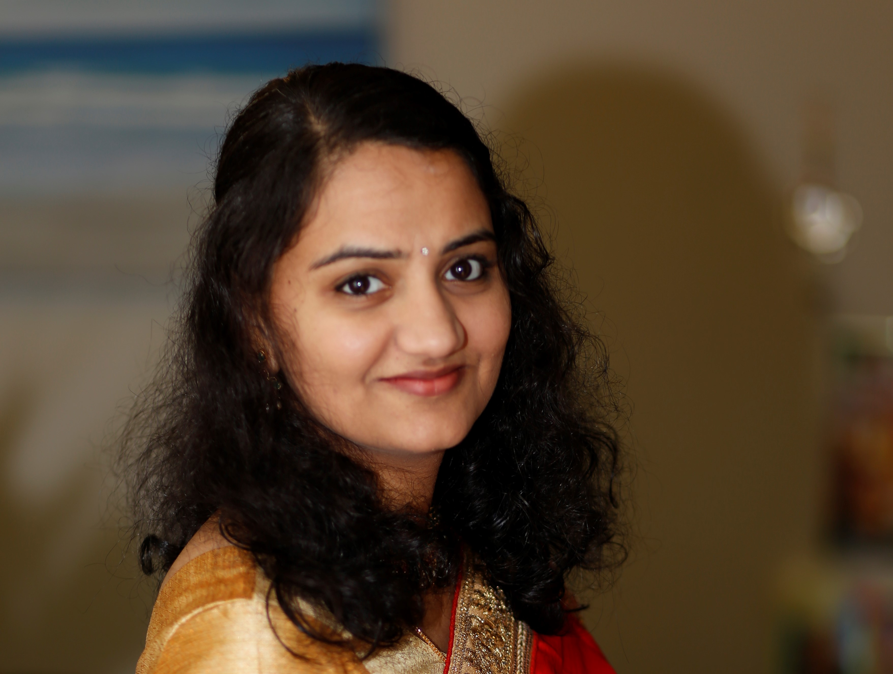

I am a person with strong grit and focus, driven by a motive to be a self-reliant woman.A fast and
detail
oriented learner, along with strong aptitute and deep dive, which gives me an edge in this competetive
world.
Having an educational base in Electronics and Communications, I have ventured into learning and building
software solutions.
Been part of global development teams in MNC's and developed apllications for banks like Citi and Bear
Stearns.
Apart from being a full time mother and taking care of my 2 kids I am person with varied interests and
skills. I am a passionate signer, artist by hobby and a nature lover.
Now, it is the best time to restart my career as my kids are becoming independent, I am
actively and passionately looking for a position of web developer in technology companies.